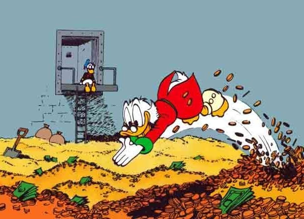

As of May I started an exciting new chapter in my career-voyage, working as a training specialist in machine learning at the ECMWF in Bonn. This is a really nice move to get back towards ML and my love of training, and so far it is has been super interesting to learn about all the work based on deep neural networks going on there.
On the other hand, I’ve had to wrap up my freelance work, at least for the moment. Freelancing has been a hugely positive experience for me, and has taught me a lot of skills that would have been difficult to learn from within a big organisation. So, partly to celebrate a new step in my career, partly to share some possible nuggets of wisdom that I’ve gained over the last few years, and partly as some notes to myself in case I come back to freelancing at some point, here are my 12 Lessons Learned. This is probably the most click-baity title I have posted under so far, but I’m afraid we’ll all have to live with that :)
So without further ado, here we go.
Get the basics right üî§
If you want to do well as a freelancer, get the basics right.
Put yourselves in the shoes of a customer (often, in my case, international organisations and consultancies): what do they want when they outsource work? I think, in general what they want is:
- The work to get done, to a high standard
- Deadlines respected
- An easy and respectful working relationship (NO DRAMAS!)
- Good communication
Of course there are other requirements that are specific to the task, and different people will have different priorities. But I would say that those are the main things to pay attention to. It’s a pretty simple formula really, but sometimes these things can go astray. For example, if you don’t manage your time and workload effectively, you might easily miss deadlines - this creates extra work and uncertainty for your customers, and if it happens too often, can damage your reputation (which is key, see below). Equally, just answering emails within a good time frame is important, otherwise customers will waste time chasing you up. All of these simple things contribute to a smooth experience which is good for everyone.
Networking is key, but no need to shout ü§´
Your network, and your professional reputation, is essential in bringing in new contracts and new clients. Most of my work came through positive referrals from other clients, and this meant I was lucky enough to never have to go out and look for work - work always came to me.
Surprisingly though, I don’t really do any “active” networking. I don’t cold-email potential clients, and I don’t sidle up to senior figures at conferences with the hope of scoring a new contract. I’m not saying there’s anything wrong with doing that at all, but it’s just not really my style (insert your preferred joke here about having no style). On the other hand, I am happy and genuinely interested to chat to other people about most things. And I am very open minded about taking on new work, and I love starting new projects with new people.
Above all though, I think that if you Get The Basics Right (see above), and do that consistently, your work will speak for itself, and your network will grow as you acquire new contracts through referrals. I like to think of this concept as “quiet networking”: do a good job, be friendly and open minded, don’t cause any dramas, and people will be happy to connect with you.
Say yes üëç
This leads nicely into the next point: say YES to things. What I mean by that is be open-minded to new work, and don’t be afraid to branch out a bit and step outside of your comfort zone. In doing so you will learn a lot, build up your capacity and your network, and this will bring in more work and diversify your business.
To give an example, when I finished working at the JRC in 2020 I had a mixed bag of skills in policy, statistics and research. One of my first big contracts was to build an R package for composite indicators. At that time, my programming skills in R were actually fairly mediocre at best, and I could perhaps have turned the work down on the basis of “not being a programmer”. But looking at it from another angle, it was a great opportunity to learn to be a programmer and get paid to do it! A few years later I would now consider myself to be a fairly expert-level programmer in R, and this has led into all kind of interesting new projects.
Similarly, in 2023 I branched out into building web-apps using Shiny, based on some dabbling that I had done a year or two earlier. I took on two big contracts to build Shiny apps and learned an enormous amount about Shiny, HTML, CSS in the process. Again, this diversified my business, but was also a really interesting new branch of work.
The point here is not to box yourself in to one narrowly-defined profession. You can learn new things. Learning new things is fun, and it pays back to you!
Say no üëé
OK, so say yes to things, except when you have to say no! But when to say no? As an optimist, I don’t often say no to things, but sometimes this is important. I’ll give two examples here.
The first is to enforce contractual boundaries when it is necessary. Most freelance contracts will come with a set of deliverables attached, which are used to estimate the number of working days necessary, and in turn the cost of the work (AKA, what you get paid). Just as it is important for you to make sure you deliver the deliverables (the hint is in the name), it is important for your client to also respect that strictly speaking, you are contracted for those deliverables, and not for any other tasks that they might dream up later on.
With that said, it is very hard to anticipate exactly what needs doing in a contract, so leaving a bit of wiggle room on both sides is important. Don’t nit-pick over small tasks that were not explicitly specified, otherwise your client will nit-pick back at you. But if large tasks appear that were not specified in the contract, it may be time to put your foot down. Always do this politely: kindly remind the client what was specified in the contract, be clear that you are flexible up to a point, but the task is too large to incorporate in the present contract, and be proactive to discuss how to get the extra tasks done (e.g. by extending or drawing up a new contract). You can also consider swapping one deliverable for another: the aim is to seek a way forward that gets the work done for the client, but also gets you paid fairly for your time.
It’s important to enforce these boundaries because if you don’t, they are likely to happen more often, but also because it is perfectly fair and reasonable. And in most cases, it is probably just that the client has forgotten what the deliverables were, and just needs a friendly reminder.
The other NO example is saying no to new contracts. This one deserves a point on its own, so I’ll see you in the next paragraph…
Find your balance üßò
Hello again! As I was saying, sometimes you have to turn down contracts.
If you work for a big company or organisation, it’s your manager’s job to make sure you have enough work to keep you busy, but not so much that you you are overloaded. Of course, you also have a say in the matter, but often it is possible to redistribute work to other team members if you become overloaded. Not so when you are working freelance! Unless you team up with other people, you are responsible for 100% of the deliverables in contracts you have open, in sickness and in health.
This means you have to be very careful not to take on more work than you can manage, otherwise you will miss deadlines and/or deliver sub-par work. And you need to build in a little wiggle room for possible illness and other unforeseen delays.
It takes experience to know how much work you can take on and still be comfortable. It’s all about finding your balance, your own sweet spot, and if you feel you are overdoing it, don’t be afraid to turn down work - in any case, often clients will be very reasonable and will offer you more work down the line if you want it.
Know your worth üí∏
Another thing that only comes with experience is understanding how much you can charge for your work. Especially at the beginning, it is easy to underestimate or even overestimate your potential daily rate if you haven’t had to specify that before. Keep in mind that some large organisations have fixed rates for consultants, whereas for others, it is completely flexible. Also, daily rates vary a lot based on the type of work and where you are.

If you know other people working on similar projects, don’t be shy to ask around a bit to get a ballpark figure. While you might be tempted to set your rate lower at the beginning, just keep in mind that some projects can run over several years, and it can be tricky to change your daily rate with an existing client once it has been established, so better to get it in the right range from the outset! Don’t forget that your daily rate has to include things like admin, contract management, sorting out IT problems and other niggling bits and pieces that you might not consider at first glance.
Keep in mind though that although daily rate is important, what really matters is the total that you get paid, and the amount of your professional time you have to spend on it. Some organisations may have a lower fixed daily rate, but are prepared to allocate more days to make up for that.
Spot the synergies üçª
“Synergies” is a dangerous word because, at least for me, it sounds like a vacuous buzzword that is carelessly tossed around in management meetings to score a few points, without necessarily having a lot of substance behind it.
Nevertheless, synergies are a real and useful thing and quite handy if you can spot them. As a freelancer, if you can work on separate projects that involve similar types of work, you can save yourself time and potentially improve your work for your clients on both projects. In my work, for example, I have often been able to reuse parts of my code, data pipelines and workflows for similar projects. With coding especially, if you generalise the code you are writing, it takes a little more time the first time around, but pays dividends down the line (see automation later).
To give a couple of examples, when developing the COINr package, I was simultaneously building a similar composite indicator R package for WIPO to calculate the Global Innovation Index. Although the two packages are distinct and have different aims, I have constantly passed concepts and code between the two, for the enrichment of both. Similarly, when working on Shiny apps I developed a library of accessory functions which make life easier for a GUI to work with COINr - this library was shared between the two projects and expanded on both.
In general, synergies can allow you to deliver better-quality work in a shorter time, which obviously tends to make your clients quite happy.
Time or deliverables? ü§∑‚Äç‚ôÇÔ∏è
I’ve worked on two main types of contracts: those that are focused on deliverables, and those that are focused on time. It’s important that everyone is clear which type of contract you are working on.
In practice all contracts come with deliverables. But in some cases, the client deliberately leaves the deliverables fairly vague and contracts you for e.g. 20 days of your professional time, in which you can negotiate work between you. When the 20 days are up, your contract is finished: in other words, the contract is considered complete based on the number of days, and not really on the deliverables.
In a deliverables-focused contract, you agree to a set of deliverables, and a cost. The contract may or may not specify the number of working days, but in either case you are required to complete the deliverables to complete the contract, and the client is not so interested in how long you worked, as long as everything gets done.
There are pros and cons of both of these. In the first case you have the security that after working 20 days you get paid for exactly 20 days of work. The second case is more risky in that there is the chance your work takes longer than your cost estimate, and you still have to deliver. However, it goes both ways: if you are efficient, it may also possible to complete the work more quickly, which effectively increases your daily rate. Obviously you still have to ensure to deliver high-quality work - if you rush it and do a sloppy job then you may damage the relationship with your client and consequently, your all-important professional reputation.
Where you definitely don’t want to be is in a mix between these two contract types, which is why everything needs to be clear up front. The danger is (from the contractor perspective) that you may think you are on a time-focused contract, and accept all kinds of arbitrary work from the client, but after your allocated days have been spent, the client suddenly starts demanding the completion of contract deliverables. Likewise you may have completed all deliverables efficiently on an ostensibly deliverable-focused contract, after which the client wants to use any remaining working days on other projects.
It has to be one or the other: either stick the the deliverables, or the time, but don’t switch between them. This is something that is worth clarifying explicitly with your client when drawing up the contract.
Manage objectives and expectations üíò
If you are doing technical work for your clients (e.g. data science), sometimes your client may not have a perfectly clear idea of what they want from you. This is perfectly normal because they don’t know everything about what you can and can’t do, what tools and options are out there, and their expertise is often in a different field to yours. This is why it is worth spending some time nailing down the objectives and expected outcomes of the project right at the beginning.
One thing that has worked for me is to draw up my own proposal which states what it is I propose to do under the contract. This sets out your understanding of the work, and ensures you are on the same page as them from the outset. It also acts as a reference in case things go astray at any point.
Equally important is to check in regularly with the client, even if they don’t specifically request it. If not, you might spend a couple of months working hard on your deliverables, only to find there was a fundamental misunderstanding between you and the client, and you have gone spectacularly off track.
It all comes back to good communication: agreeing and clearly stating objectives and outcomes, and sharing and discussing results as the project evolves.
Automation and outsourcing üíª
One of the nice things about freelancing is that you are usually free to manage your tools and methods as you like. This opens up a lot of possibilities for automation and time-saving.
On the admin side of things (yes unfortunately freelancing comes with a fair dose of admin) get a system set up early on for tracking your time, active and upcoming contracts, invoices and payments, and so on. I did this one in Excel and it took some iterations to get something that works well for my needs. However, once it’s up and running, it saves a lot of time and is essential in keeping track of your time and money. Most likely you can find apps that deal with this as well, if you prefer to go down that route.
For handling tax, I’d recommend finding a good accountant. It costs money, but unless you love wading through tax regulations, it’s money very well spent. Actually here in Italy, almost no one dares to do their own taxes because it’s a minefield of obscure rules, arcane jargon and traps that you can unwittingly fall into and get busted for several years in the future, so an accountant is not even optional in practice.
Overall, consider that your time is valuable, and if you spend it on things that are not your profession, you might do well to outsource that work, unless you specifically want to branch out into that area.
Getting your files well organised also helps a lot, and using cloud storage such as OneDrive allows you to access your work from anywhere, even your phone, and also acts as an all-important backup in case your laptop has a meltdown.
Finally, if you do much coding, you can really optimise things by generalising your code so that it can be reused easily in other projects. For example, I developed the iCOINr package which contains functions for generating interactive plots related to composite indicators which I generated for one project and reused in several others. I also have libraries of utility functions which quickly perform common tasks, which I can can import into any relevant project.
Finally: Look after yourself ü§ó
Last but by far not the least: take good care of yourself. You are your number one resource and asset, so treat yourself as such.
That means: don’t work yourself to death. Make sure you stay reasonably fit and healthy. Eat well. Get outside. Meet people in person where possible, rather than online. Take holidays, enjoy doing whatever it is that you like to do in life!
This advice might sound a little glib, but when you work for yourself it easy to overwork. One reason is that as we have discussed, it’s hard to get exactly the right amount of work, and often the error is on the “slightly too much” side of things. But also, since your income is linked to the amount of work that you do, it is tempting to work extra in the evenings to tick off some tasks and earn some extra money. Although I’ve been guilty of this from time to time, I don’t think it is a good idea in general and I try to avoid it. Life is about much more than work, and even from a work point of view you are not doing yourself any favours by running yourself into the ground.
Speaking of which, I’m now off for a bike ride :)